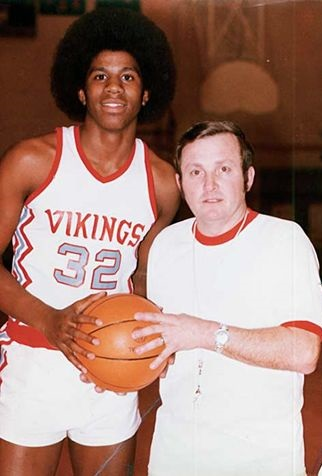
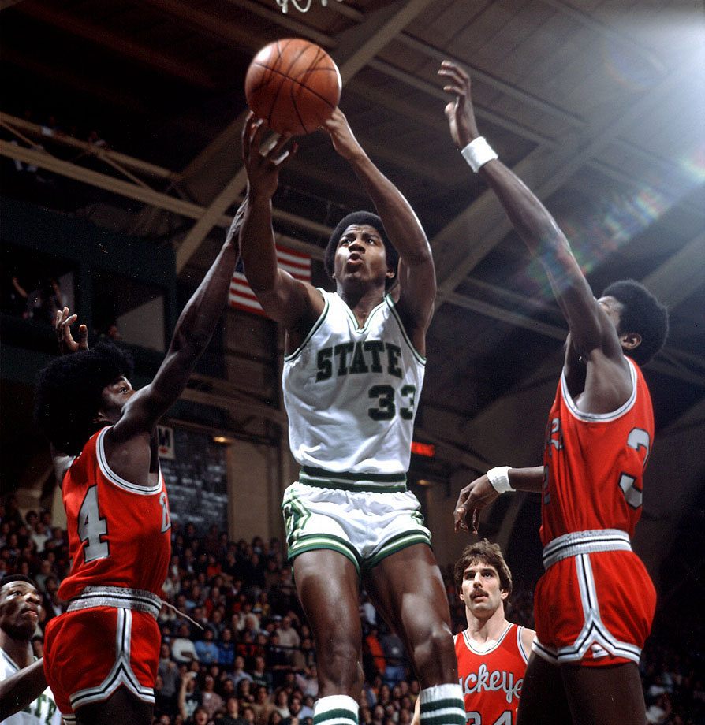
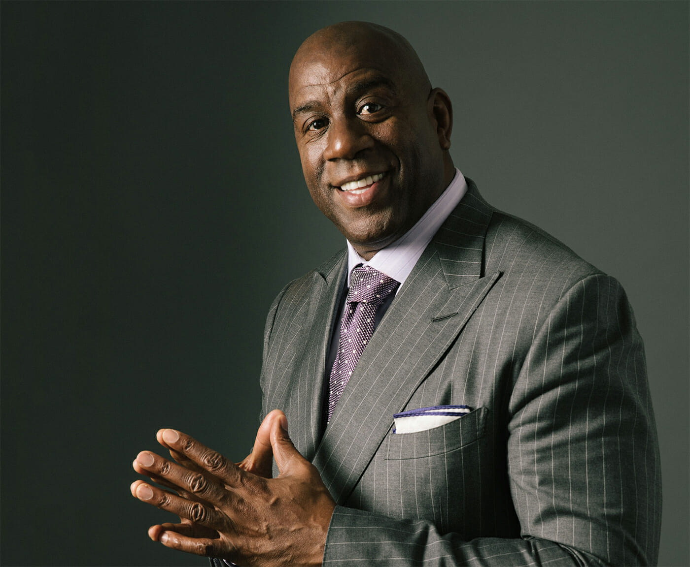

Biografia
Sus Inicios
Johnson creció en Míchigan, y desde pequeño le gustó jugar al baloncesto. Se levantaba temprano para ir a jugar antes del colegio, y frecuentemente iba a los sitios botando un balón. Según su madre, mostraba mucho entusiasmo en todo lo que hacía. Cuando por fin se unió al equipo de baloncesto de su instituto, logró con 15 años un triple-doble con 36 puntos, 16 rebotes y 16 asistencias. Después de esto, un periodista deportivo le denominó MAGIC por primera vez. Sufrió la pérdida de un compañero de equipo en un accidente de coche, por lo que se comprometieron a ganar el campeonato estatal como homenaje a Reggie Chastaine, el jugador fallecido, algo que lograron en la prórroga de la final. En su último año de high school el equipo logró un balance de 27 victorias y 1 única derrota, promedió 28,8 puntos y 16,8 rebotes y ganó de nuevo el título estatal.
Universidad
Magic desarrolló su trayectoria colegial en la Universidad Estatal de Míchigan, cerca de su ciudad natal. Se unió al equipo en la temporada 1977-78,consiguieron ganar 13 partidos seguidos y obtuvieron el título de conferencia tras once años sin lograrlo. Además, volvieron a aparecer en el Torneo de la NCAA, luego de 19 años de ausencia, y llegaron a la final del Medio Oeste, en la que fueron derrotados por la Universidad de Kentucky. Comenzaron la siguiente temporada de forma titubeante, ya que a final de enero de 1979 llevaban un balance de 4 victorias y 4 derrotas. Sin embargo, en el noveno encuentro lograron ganar en la prórroga al hasta entonces líder de la conferencia, Ohio State, y así iniciaron una racha de 10 victorias consecutivas que les afianzaron en el primer puesto de la Big Ten. En la fase final, vencieron en sus 4 primeros enfrentamientos, con una diferencia media de 23 puntos de ventaja, y así llegaron a la final de la NCAA. El rival fue la Universidad de Indiana State, invictos esa temporada, y colocados en el número 1 del ranking, en el cual jugaba el que pocos años más tarde sería su gran rival y amigo, Larry Bird. Los de Míchigan alcanzaron finalmente el campeonato con un marcador de 75-64; Johnson fue elegido esa temporada como el mejor jugador del torneo. Jugó tan solo 2 temporadas, pero fueron suficientes para que su fama creciera a nivel nacional. Promedió finalmente 17,1 puntos, 7,6 rebotes y 7,9 asistencias.
Profesionalismo

En los Lakers se desarrollaría toda su etapa profesional ,desde 1979 a 1991, donde gracias a su velocidad, su gran manejo del balón y su magnífica visión de juego, desempeñó de manera magistral el puesto de base (con 2,06 metros de altura), y llevó al equipo a conquistar cinco campeonatos de la NBA (1980, 1982, 1985, 1987 y 1988). Johnson es uno de los cuatro únicos jugadores en ganar los títulos de la NCAA y NBA en años consecutivos, y es el único rookie en la historia de la NBA en ganar el MVP de las Finales de la NBA en 1980; galardón que volvió a conquistar en otras dos ocasiones. Fue elegido MVP de la Temporada en tres ocasiones ,1987, 1989 y 1990 y MVP del All-Star Game en 1990 y 1992; esta última ocasión, un año después de su retirada. El sobrenombre de MAGIC proviene del instituto y es debido a su gran habilidad para el pase, que le permitía repartir gran cantidad de asistencias (11,2 por partido durante toda su etapa profesional para un total de 10.141) a sus compañeros de juego a los que, con su carisma, contagiaba su entusiasmo por el juego y su carácter ganador. Fue un buen anotador y promedió durante toda su carrera 19,5 puntos por partido, pero Magic sobresalía en todas las facetas del juego. Durante diferentes períodos de su carrera, fue el mejor del campeonato en asistencias (lideró este ranking desde 1982 a 1987) y robos de balón. Guio a los Lakers para ser el equipo más anotador tres veces (1987, 1989 y 1990) y el más reboteador dos veces (1982 y 1983). Para algunos aficionados y periodistas, su forma de jugar sin mirar a sus pases y su rapidez contribuyeron a que el estilo de juego de los Lakers de aquella época fuera conocido como el "Showtime".
Vida Personal
Tras anunciar en noviembre de 1991 su infección por el virus del VIH, creó la Fundación Magic Johnson para ayudar a combatir la enfermedad, aunque posteriormente diversificó sus objetivos para ayudar también en otro tipo de causas. Al año siguiente escribió una guía educativa bajo el título de What you can do to avoid AIDS —en español, Qué puedes hacer para evitar el sida-. En 1999, fue el principal ponente en la Conferencia del Día Mundial de la Lucha contra el Sida celebrada en las Naciones Unidas. Además, fue nombrado Mensajero de la Paz de dicha institución. Puso en marcha Magic Johnson Enterprises, una empresa con un patrimonio neto de 700 millones de dólares, y que contaba entre sus subsidiarias con una productora, Magic Johnson Productions, una cadena nacional de cines, Magic Johnson Theaters, y unos estudios de cine, Magic Johnson Entertainment. Desde que le fuera detectado el virus del sida, Magic se ha dedicado a dar charlas y conferencias en colegios e instituciones estadounidenses para mostrar a la gente la forma de prevenir su enfermedad y la de luchar contra la misma. Cuenta su experiencia con la esperanza de que, sobre todo la gente joven capte su mensaje, como explicaba en un colegio de Washington en 2006: "Las únicas cosas que han salvado mi vida han sido la detección precoz y los antirretrovirales". Trata de demostrar al mundo que su enfermedad es, en primer lugar, evitable, y que, en el caso de caer en ella, se puede aprender a convivir con la misma.